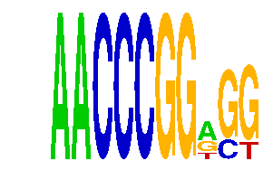

family_7 |
|---|
|  |
| Download PWM |
| Download instances (motifs) |
| Show motif distribution |
Query_ID | Query_Consensus | Subject_Name | Source_DB | Subject_ID | Length | Orientation | Offset | Divergence | Overlap | Subject_Consensus |
|---|
Sequence | Start_position (from start) | Start_position (from end) | Average conservation | Best conservation score | Instance_with_best_CS | Best_Z-score | Instance_with_best_ZS | Strand |
|---|---|---|---|---|---|---|---|---|
| chr2:51002464-51004771 | 864 | 874 | 0.0001 | 0.001 | AACCCGGRSG | 35.708115 | AACCCGGWGK | 1 |
| chr7:30979456-30980498 | 657 | 667 | 0.001 | 0.004 | AACCCGGWGK | 35.708115 | AACCCGGWGK | -1 |
| chr1:74438228-74439489 | 998 | 1008 | 0.0016 | 0.004 | AACCCGGWGK | 35.708115 | AACCCGGWGK | -1 |
| chr1:88423583-88425608 | 390 | 400 | 0.4306 | 0.867 | AACCCGGRSG | 32.700714 | AACCCGGRSG | -1 |
| chr9:108165360-108166482 | 204 | 214 | 0.0025 | 0.006 | AACCCGGWGK | 32.700714 | AACCCGGWSG | 1 |
| chr9:78368117-78369338 | 573 | 583 | NA | NA | AACCCGGRSG | 32.700714 | AACCCGGRSG | 1 |
| chr4:135690367-135691895 | 727 | 737 | 0.9951 | 1 | AACCCGGWGK | 32.700714 | AACCCGGWSG | -1 |
| chr12:113204375-113205603 | 715 | 725 | 0.0006 | 0.002 | AACCCGGRSG | 32.700714 | AACCCGGRSG | -1 |
| chr14:26196886-26198408 | 402 | 412 | 0.0003 | 0.001 | AACCCGGWGK | 35.708115 | AACCCGGWGK | 1 |
| chr1:88338466-88339926 | 1083 | 1093 | 0.0015 | 0.003 | AACCCGGWSG | 35.708115 | AACCCGGWGK | -1 |
| chr9:59503982-59505023 | 583 | 593 | 0.0002 | 0.001 | AACCCGGWGK | 35.708115 | AACCCGGWGK | -1 |
| chr6:86475144-86476362 | 1174 | 1184 | 0.0003 | 0.002 | AACCCGGWGK | 32.700714 | AACCCGGWSG | 1 |
| chr17:47808878-47810250 | 401 | 411 | 0.9659 | 1 | AACCCGGWGK | 32.700714 | AACCCGGRSG | 1 |
| chr4:55361912-55363931 | 986 | 996 | 0.2175 | 0.579 | AACCCGGWGK | 32.700714 | AACCCGGWSG | -1 |
| chr16:90221014-90222037 | 485 | 495 | 0.001 | 0.003 | AACCCGGWGK | 32.700714 | AACCCGGWSG | 1 |
| chr2:156545920-156547577 | 836 | 846 | 0.9999 | 1 | AACCCGGRSG | 35.708115 | AACCCGGWGK | 1 |
| chr14:56290356-56291374 | 436 | 446 | 0.0017 | 0.007 | AACCCGGWSG | 35.708115 | AACCCGGWGK | -1 |
| chr11:120441757-120443354 | 710 | 720 | 0.0023 | 0.011 | AACCCGGWSG | 35.708115 | AACCCGGWGK | 1 |
| chr3:153606597-153608381 | 544 | 554 | 0.0018 | 0.004 | AACCCGGWGK | 35.708115 | AACCCGGWGK | -1 |
| chr15:36645182-36646671 | 710 | 720 | 0.0095 | 0.027 | AACCCGGRSG | 35.708115 | AACCCGGWGK | 1 |
| chr14:26278978-26280502 | 1300 | 1310 | 0.8143 | 0.979 | AACCCGGRSG | 32.700714 | AACCCGGRSG | 1 |
| chr9:43942347-43943517 | 1087 | 1097 | 0.0008 | 0.004 | AACCCGGWGK | 32.700714 | AACCCGGRSG | -1 |
| chr3:138105042-138106736 | 1333 | 1343 | 0.116 | 0.143 | AACCCGGRSG | 32.700714 | AACCCGGRSG | -1 |
| chr4:150283191-150284332 | 574 | 584 | 0.0053 | 0.016 | AACCCGGRSG | 35.708115 | AACCCGGWGK | 1 |
| chr12:86451416-86452443 | 168 | 178 | 0.0076 | 0.02 | AACCCGGRSG | 32.700714 | AACCCGGRSG | 1 |
| chr10:126500478-126501540 | 134 | 144 | 0.9335 | 0.999 | AACCCGGRSG | 32.700714 | AACCCGGRSG | -1 |
| chr12:36882765-36883770 | 620 | 630 | 0.9851 | 0.997 | AACCCGGWGK | 35.708115 | AACCCGGWGK | 1 |
| chr12:113204375-113205603 | 591 | 601 | 0.0055 | 0.011 | AACCCGGWSG | 35.708115 | AACCCGGWGK | 1 |
| chr3:33918676-33920245 | 926 | 936 | 0.0087 | 0.028 | AACCCGGRSG | 32.700714 | AACCCGGWSG | 1 |
| chr1:74438228-74439489 | 4 | 14 | 0.9896 | 1 | AACCCGGRSG | 32.700714 | AACCCGGRSG | -1 |
| chr17:35978215-35979310 | 427 | 437 | 0.2032 | 0.875 | AACCCGGRSG | 32.700714 | AACCCGGRSG | -1 |